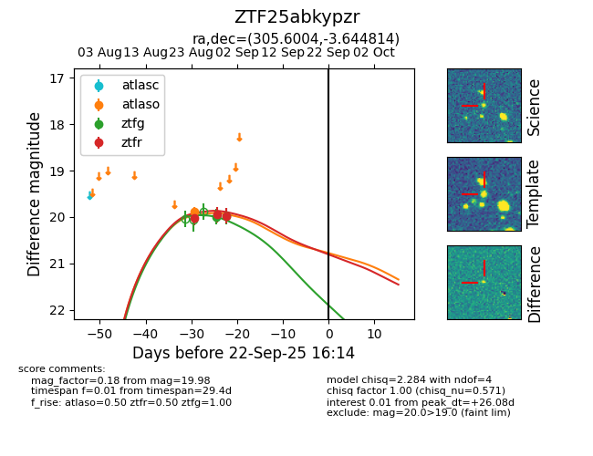
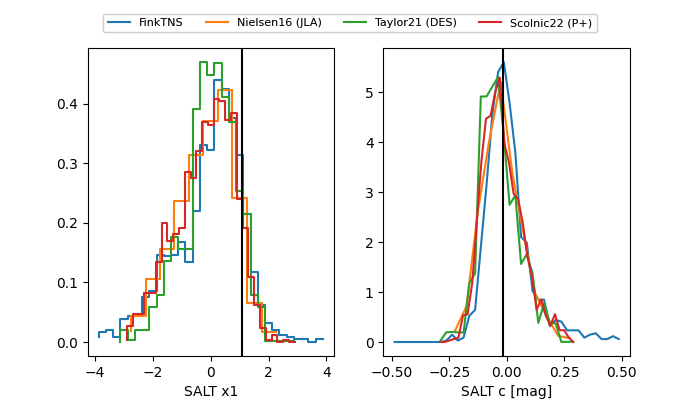

FINK: ZTF25abkypzr
Lasair: ZTF25abkypzr
ALeRCE: ZTF25abkypzr
ZTF25abkypzr (ztf,fink)
equatorial (ra, dec) = (305.6004,-3.64481)
galactic (l, b) = (40.3194,-21.85939)


last atlaso=19.88, ztfg=19.98, ztfr=19.97
1 atlaso, 2 ztfg, 3 ztfr detections